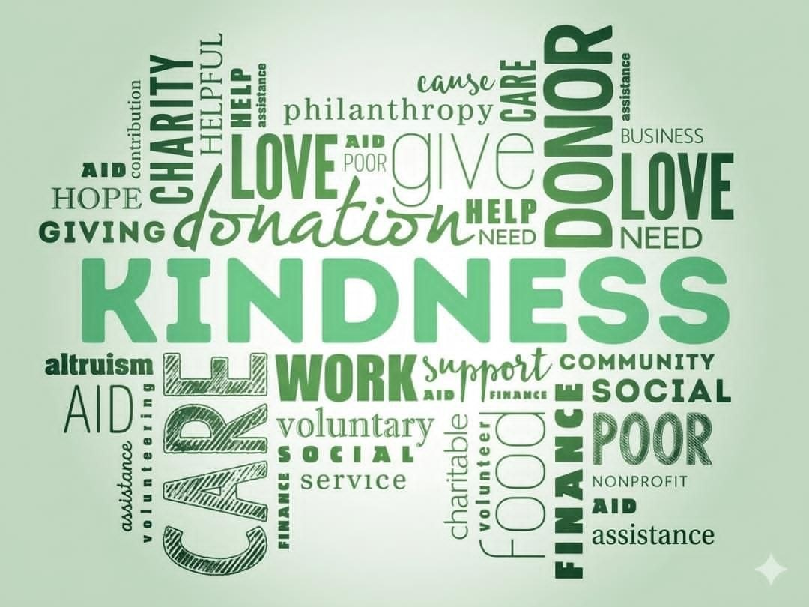
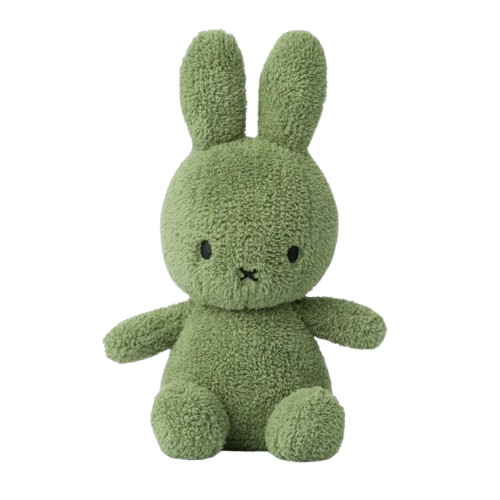
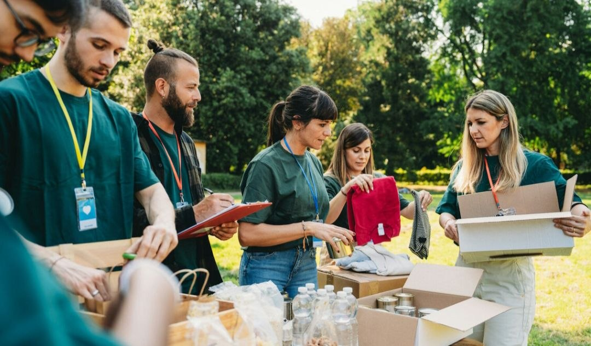
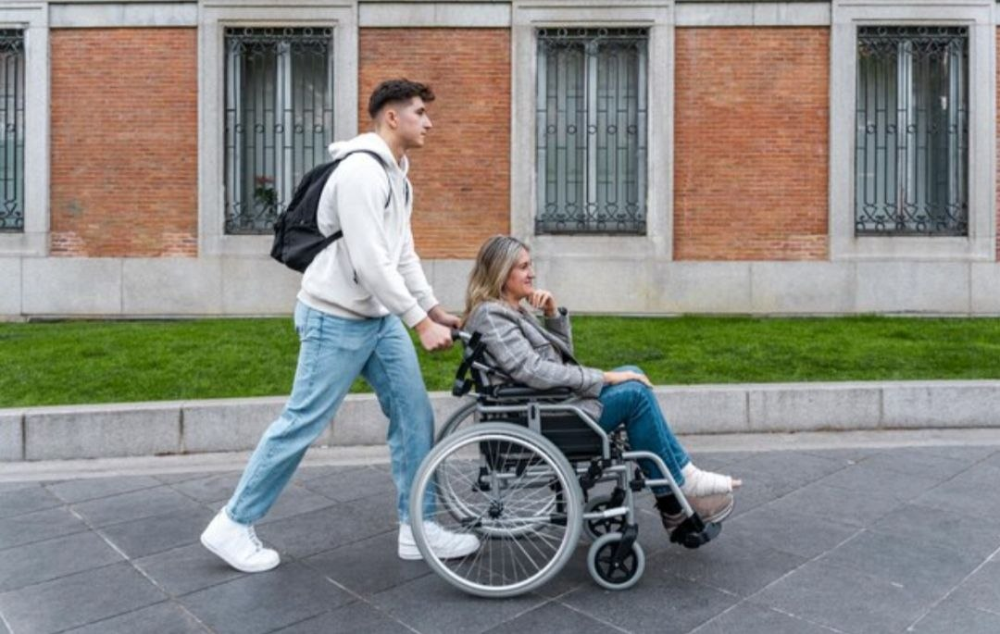
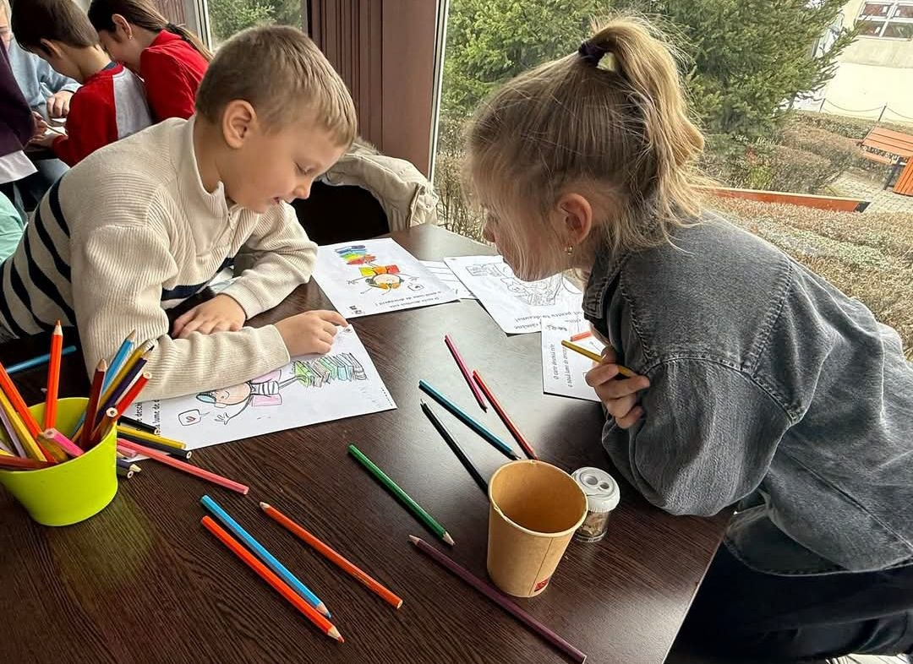
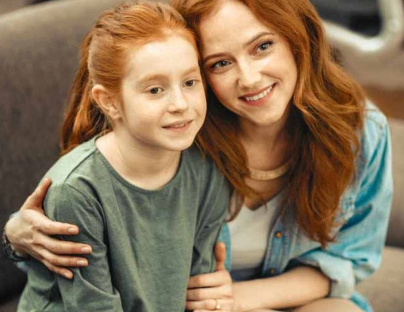

Vizite și sprijin direct în comunități – voluntarii merg la familii sau centre sociale pentru a oferi ajutor concret, dar și sprijin moral. Aceste vizite ajută la înțelegerea mai bună a problemelor reale și la oferirea unui ajutor mai personalizat. Prin aceste activități, voluntarii pot observa mai ușor nevoile familiilor și pot interveni mai eficient. Totodată, sprijinul oferit le oferă oamenilor mai multă încredere și speranță în momentele dificile.

Sprijin pentru copiii cu nevoi speciale – activități adaptate nivelului fiecărui copil, cum ar fi jocuri simple, exerciții de comunicare sau activități senzoriale, menite să îi ajute în dezvoltare și integrare. Aceste activități contribuie la îmbunătățirea abilităților sociale și emoționale ale copiilor. De asemenea, ele îi ajută să capete mai multă încredere în propriile capacități și să se integreze mai ușor în colectivitate.

Campanii de colectare de ajutoare (alimente, haine, rechizite și produse de igienă) – echipa organizează strângeri de donații din comunitate sau școală. Toate produsele colectate sunt sortate și distribuite familiilor vulnerabile și copiilor care au nevoie, pentru a le asigura condiții de trai mai bune și sprijin în educație. Prin aceste campanii, oamenii sunt încurajați să fie mai solidari și mai implicați în ajutorarea celor aflați în dificultate. În același timp, familiile beneficiază de sprijin concret pentru necesitățile de zi cu zi.

Evenimente caritabile – târguri, expoziții sau activități organizate pentru strângerea de fonduri, care sunt folosite ulterior pentru a ajuta familiile sau copiii aflați în nevoie. Aceste evenimente contribuie la dezvoltarea spiritului de solidaritate și implicare în comunitate. De asemenea, ele oferă posibilitatea oamenilor de a participa activ la sprijinirea persoanelor vulnerabile.

Ajutor educațional – voluntarii oferă suport la teme, explicații suplimentare și ajutor la învățare pentru copiii care au dificultăți școlare sau nu au acces la resurse. Prin acest sprijin, copiii își pot îmbunătăți rezultatele la învățătură și pot înțelege mai bine lecțiile. Totodată, ei capătă mai multă încredere în propriile capacități și devin mai motivați să învețe.